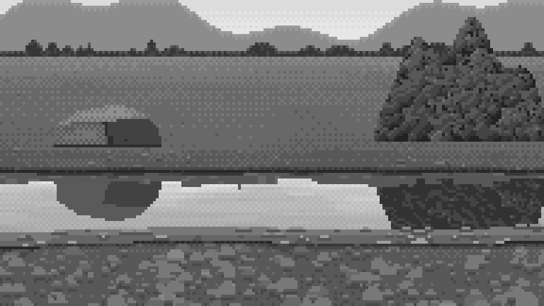
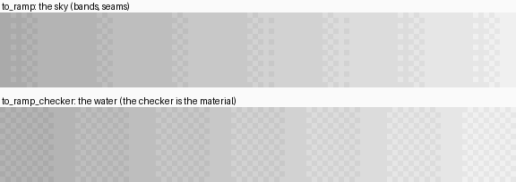
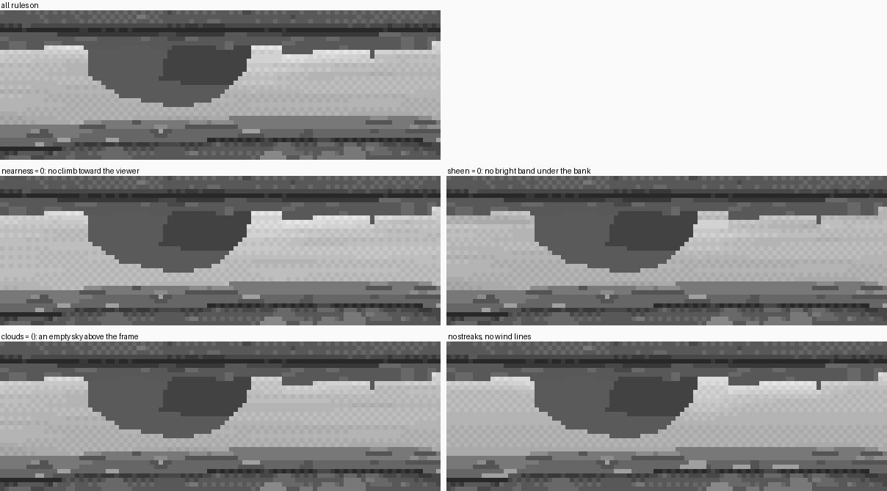
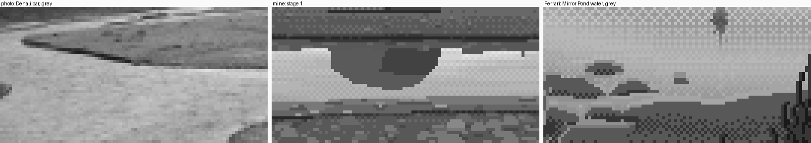

2. The mirror as a material: the sky's ramp, quantized as a checker
What it's for. The open water of a channel at a low angle: the part that reflects only sky. This is the passage the critic called the best water in the studio ("at 8× the open mirror would sit beside his"). Here's how it's made, and which of its rules do what.
Code: the water block of paint() in code/painter.py, to_ramp_checker and fresnel_art in code/channel.py, the stage-1 scene in code/s1b_still.py.

The stage-1 strip in grey, 192×108 at 4×: eye 1.6 m, looking 7° down, water from 7 to 11 m.
Step 1. Compute a physical value first, then paint from it
For each water pixel the renderer (how-to 3) knows its grazing angle and water depth. Start from physics:
F = ch.fresnel_art(gr) # 0.22 + 1.15 * Schlick, clipped
skyrefl = sky_value(np.degrees(gr), xx + 0.5, W, prm['clouds']) # the sky at the REFLECTED elevation
tvis = np.exp(-d / prm['visibility']) # glacial milk: visibility ~6 cm
body = prm['bed'] * tvis + prm['milk'] * (1 - tvis) # the bed fading into the water's own milk
Vs = F * skyrefl + (1 - F) * body
The Fresnel gain (0.22 + 1.15·F) comes from the earlier water study. Plain Schlick at 8–13° grazing makes the water much darker than any photo or any Ferrari.
Two measurements told me where the values had to land. In the photos (percentiles over bands of rows; see POST.md section 2), the NZ overcast ribbons are L* 95–99 against gravel at 31–35, and the Denali channel is L* 78 against a sky of 99 and gravel of 45–62. In Ferrari, the water reuses his sky's own indices. So the order is sky and water light, land in the middle, wet margins dark, and the water is a step or two below the sky it mirrors.
My first strip failed that: the water came out equal to the gravel (both L* 62), and it didn't read as water at all. I darkened the gravel and lightened the bed seen through the water.
Step 2. Quantize onto the sky ramp, with the checker as the material
This is the rule I'd keep if I could keep only one. Ferrari's sky is flat bands with short seams. His water, at 8×, is a 50% checker of two neighbouring tints almost everywhere. A flat tint appears only where the value passes right through a step. Same ramp, different material:

The same gradient through to_ramp (the sky) and to_ramp_checker (the water), 6×. Made by code/figs.py.
def to_ramp_checker(V, ramp_vals, ramp_idx, flat=0.24, ox=0, oy=0):
"""WATER quantizer (Ferrari's mirrored sky): the checker of two adjacent tints is the material.
Holds a 50% checker across most of each step, passing through a flat tint only within
+-flat/2 of an integer step."""
vals = np.asarray(ramp_vals, float)
order = np.argsort(vals)
vs = vals[order]; ix = np.asarray(ramp_idx)[order]
pos = np.interp(V, vs, np.arange(len(vs)))
f = np.floor(pos); r = pos - f
h, w = np.shape(V)
yy, xx = np.mgrid[0:h, 0:w]
par = ((xx + ox + yy + oy) % 2) == 0
lo = f.astype(int); hi = lo + 1
near_lo = r < flat / 2
near_hi = r > 1 - flat / 2
q = np.where(near_lo, lo, np.where(near_hi, hi, np.where(par, lo, hi)))
return ix[np.clip(q, 0, len(vs) - 1)]
The ramp it quantizes onto is the sky's ramp followed by five water-only tints (the bed seen through thin water), in value order:
mir_i = P.r('wmir') if prm.get('milky', True) and 'wmir' in P.ramps else sky_i
ws_v = sky_v + wat_v; ws_i = np.r_[mir_i, wat_i]
Vs = np.minimum(Vs, sky_v[1] - 3) # the mirror never reaches the sky's top step
cv[msky] = ch.to_ramp_checker(Vs, ws_v, ws_i, 0.3)[msky]
The cap in the third line matters. Without it the brightest water saturates into a flat white patch, which reads as a hole in the picture, not a bright reflection. (wmir is the milky mirror: the same greys as the sky ramp with the colours clouded; see how-to 5.)
Before and after, both from my notebook:

nb062, v7. Water quantized like the sky, in flat bands with seams. It reads as a painted stripe. (Ignore the cone-shaped cloud reflections; that tell is in how-to 8.)

nb064, v8, at 8×. The same values through to_ramp_checker. Now it's water.

nb063. Ferrari's Mirror Pond water at 8× (V16PM). The checker is everywhere.
Step 3. Add the four rules that make it his
Each is one or two lines, and each moves the water by only a step or so. That's why you need all four. Here they are switched off one at a time, using only the painter's own parameters:

The left half of the stage-1 water at 6×. Made by figs.py fig_mirror_ablation, which calls s1b_still.render(1, prm) with one parameter changed.
- The sheen. Directly under a reflected bank, the reflected ray has only just cleared the bank top. It meets the lowest visible sky, at the highest Fresnel. That's the brightest water in the picture, and it falls out of the physics. I lift it a little so it reads:
python
Vs = Vs + np.where((under >= 1) & (under <= 3), prm['sheen'] - 6 * under, 0)
under is the number of rows below the last reflected-bank pixel in the column.
2. The climb with nearness. Copy A's rule 1: nearer water mirrors higher sky and takes a higher (darker) step. Physically the drop over 25 rows is a few percent. Ferrari states it outright, so I do too, in log distance:
python
t = np.clip((np.log(zhi) - np.log(np.maximum(z, 1e-3))) / max(np.log(zhi) - np.log(zlo), 1e-3), 0, 1)
Vs = Vs - t * prm['nearness']
- Clouds above the frame. At 5–10° down, the strip mirrors sky 8–13° up, which is out of the frame. So the water shows clouds you can't see, and a mirror under an empty upper sky is dead (fourth panel). I put stratocumulus banks up there: flat bases, gently undulating tops, soft edges. Their reflections lie in the water as soft horizontal light shapes.
python
along = np.clip(1 - np.abs(x) ** 3, 0, 1) # a long flat bank, soft ends
top = eb + (et - eb) * (0.7 + 0.12 * np.sin(x * 5.0 + k) + 0.08 * np.sin(x * 13.0 + 2 * k)) * along
a = np.clip((top - e) / 1.2, 0, 1) * np.clip((e - eb) / 0.6 + 1, 0, 1) * along
v = v * (1 - a) + (210 + 24 * t ** 0.7) * a
My first clouds were domes. Mirrored they became hanging cones, like spotlights (the tell in how-to 8). 4. Streaks and wind lines. Faint ripples mirror a slightly different sky, so there are long horizontal streaks (noise stretched 22:1) and, on about 30% of rows, one wind line:
python
Vs = Vs + (pk.value_noise(H, W, 1, rng, 1, aniso=(1.0, 22.0)) - 0.5) * prm['streaks']
...
seg = [x for x in range(x0, min(W, x0 + L)) if msky[r, x] and cv[r, x] in ws_sorted ...]
j = max(ws_sorted.index(cv[r, x]) for x in seg)
for x in seg:
cv[r, x] = ws_sorted[min(j + 1, len(ws_sorted) - 2)]
A wind line is a solid run of 3–11 px, one step past the lighter tint of the local checker. My first wind lines were dotted (every other pixel, as in the master-copy student's dash rows), and on a checker they simply vanished: a dotted dash on a checker is the checker.
Step 4. Check it against a photo and against him, in grey

The Denali photo in grey, my strip, and his Mirror Pond water in grey, at 6×.
Measured on my canvas: sheen L* 77, open water 67 → 62 toward the viewer, the shallow shelf 54 → 36, the wet margin 28–36, dry gravel about 47.
Where it still falls short: his water is calmer. Mine has a few too many horizontal events in 25 rows (streaks, a wind line, the shelf's edge), and the critic said the same. If you use this, try streaks around 10 and wind around 0.2 before anything else.